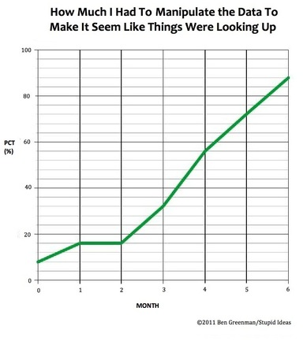

Grandiloquent Bloviator
Like Tyler Cowen for the C-students
Ben Greenman’s Graphs About Charts and Charts About Graphs: Graph #1 by Ben Greenman
2011-06-17
Another graph I love
.

← Newer Post
Home
Older Post →
Trey Miller
For the last twenty years, I've been trying to talk less. And now, this. Please send comments, suggestions, or feedback to
t@grandiloquentbloviator.com
.
Archive
View full archive »
Static archive · gb.adaliaworks.com